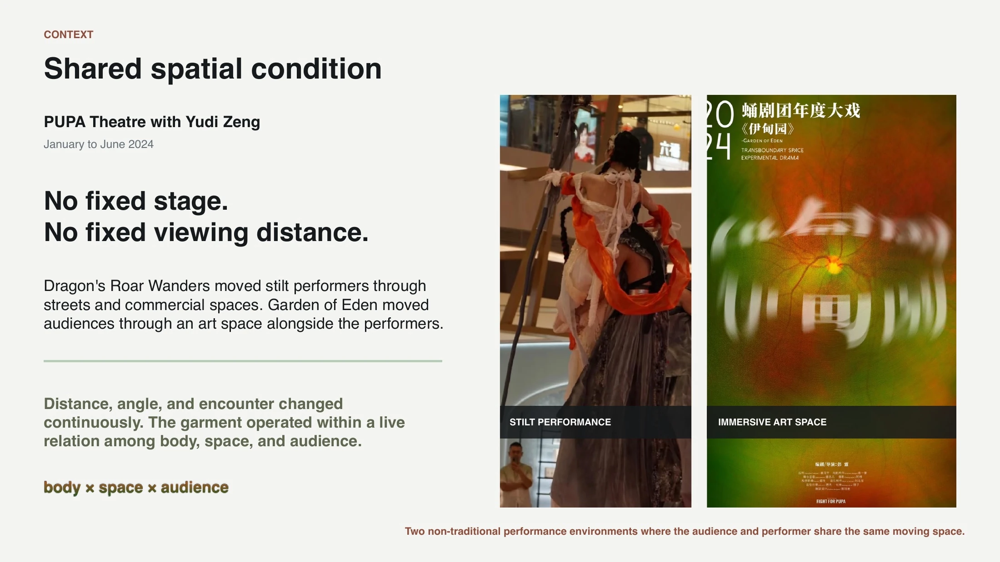
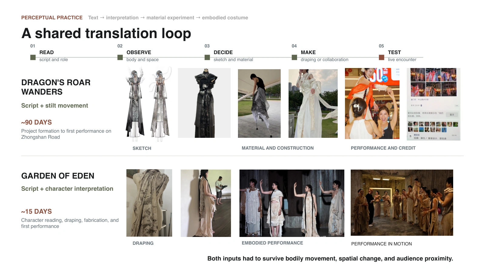
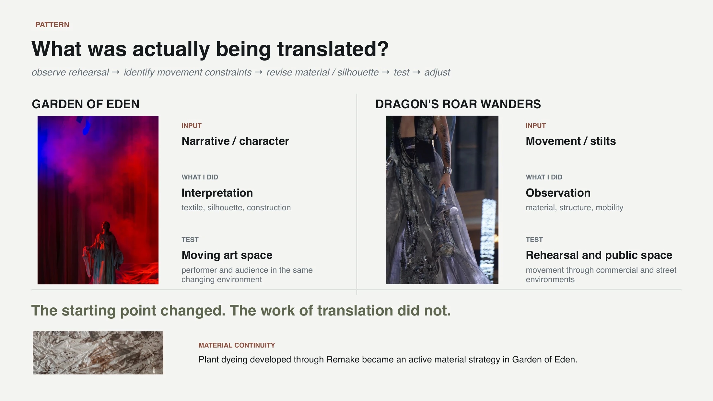
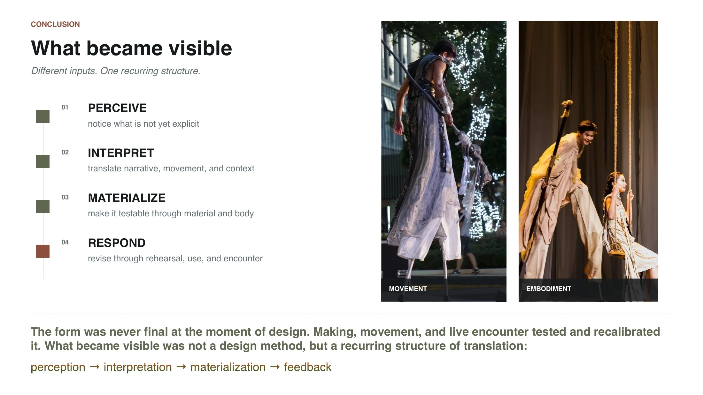
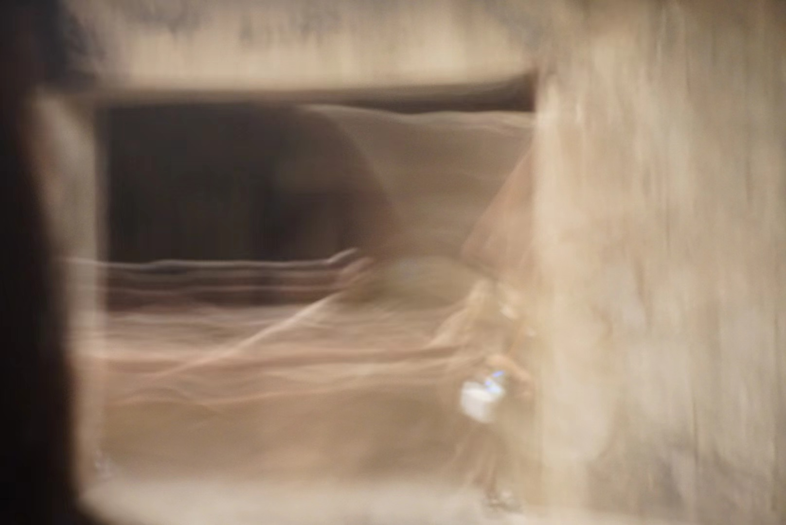

03 / TRANSLATION · EMBODIED PRACTICE
Translating the Invisible
How does something felt become something another person can experience?
Across fashion and immersive theatre, I work with things that are difficult to communicate directly: character, atmosphere, tension, intention, and movement.
The work begins before an object is made—with observation, interpretation, and negotiation—and continues through material, costume, spatial cues, bodily movement, and audience interaction. What is being translated is not simply information, but a feeling.
Perception / Interpretation / Materialization / Embodied feedback





MOVEMENT / SPACE / AUDIENCE
A performance film carries what still images cannot.
Open the full film to see the work in motion, in relation to space and audience. It opens in a new tab and does not autoplay here.

Watch full performance film ↗